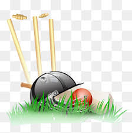

Cricket |
 |
| HOME | HISTORY | WORLD CUP | T20 WORLD CUP | GALLARY |
Cricket is believed to have begun possibly as early as the 13th century as a game in which country
boys bowled at a tree stump or at the hurdle gate into a sheep pen. This gate consisted of two
uprights and a crossbar resting on the slotted tops; the crossbar was called a bail and the entire
gate a wicket. The fact that the bail could be dislodged when the wicket was struck made this
preferable to the stump, which name was later applied to the hurdle uprights. Early manuscripts differ
about the size of the wicket, which acquired a third stump in the 1770s, but by 1706 the pitch—the
area between the wickets—was 22 yards long.
The ball, once presumably a stone, has remained much the same since the 17th century. Its modern
weight of between 5.5 and 5.75 ounces (156 and 163 grams) was established in 1774.
The primitive bat was no doubt a shaped branch of a tree, resembling a modern hockey stick but
considerably longer and heavier. The change to a straight bat was made to defend against length
bowling, which had evolved with cricketers in Hambledon, a small village in southern England. The bat
was shortened in the handle and straightened and broadened in the blade, which led to forward play,
driving, and cutting. As bowling technique was not very advanced during this period, batting dominated
bowling through the 18th century.
The earliest reference to an 11-a-side match, played in Sussex for a stake of 50 guineas, dates from
1697. In 1709 Kent met Surrey in the first recorded intercounty match at Dartford, and it is probable
that about this time a code of laws (rules) existed for the conduct of the game, although the earliest
known version of such rules is dated 1744. Sources suggest that cricket was limited to the southern
counties of England during the early 18th century, but its popularity grew and eventually spread to
London, notably to the Artillery Ground, Finsbury, which saw a famous match between Kent and
All-England in 1744. Heavy betting and disorderly crowds were common at matches.
The aforementioned Hambledon Club, playing in Hampshire on Broadhalfpenny Down, was the predominant
cricket force in the second half of the 18th century before the rise of the Marylebone Cricket Club
(MCC) in London. Formed from a cricket club that played at White Conduit Fields, the club moved to
Lord’s Cricket Ground in St. Marylebone borough in 1787 and became the MCC and in the following year
published its first revised code of laws. Lord’s, which was named after its founder, Thomas Lord, has
had three locations over its history. Moving to the current ground in St. John’s Wood in 1814, Lord’s
became the headquarters of world cricket.
In 1836 the first match of North counties versus South counties was played, providing clear evidence
of the spread of cricket. In 1846 the All-England XI, founded by William Clarke of Nottingham, began
touring the country, and from 1852, when some of the leading professionals (including John Wisden, who
later compiled the first of the famous Wisden almanacs on cricketing) seceded to form the United
All-England XI, these two teams monopolized the best cricket talent until the rise of county cricket.
They supplied the players for the first English touring team overseas in 1859.
Until early in the 19th century all bowling was underhand, and most bowlers favoured the high-tossed
lob. Next came “the round-arm revolution,” in which many bowlers began raising the point at which they
released the ball. Controversy raged furiously, and in 1835 the MCC rephrased the law to allow the
hand to be raised as high as the shoulder. The new style led to a great increase in pace, or bowling
speed. Gradually bowlers raised the hand higher and higher in defiance of the law. Matters were
brought to a head in 1862 when an England team playing against Surrey left the field at London’s
Kennington Oval in protest over a “no ball” call (i.e., an umpire’s decision that the bowler has
thrown an illegal pitch). The argument centred on whether the bowler should be allowed to raise his
arm above the shoulder. As a result of this controversy, the bowler was in 1864 officially accorded
liberty to bowl overhand (but not to cock and straighten the arm). This change dramatically altered
the game, making it yet more difficult for a batsman to judge the ball. Already a bowler was allowed
to take a running start from any direction and for any distance. Once the bowler was allowed to
release overhand, the ball could then reach speeds above 90 mph (145 km/hr). Though this is not as
fast as the pitching speed in baseball, cricket has an additional twist in that the ball is usually
delivered so as to bounce on the pitch (field) before the batsman can hit it. Thus, the ball may curve
to the right or the left, bounce low or high, or spin toward or away from the batsman.
Batsmen learned to protect themselves with pads and batting gloves, and a cane handle increased the
resilience of the bat. Only the best batsmen, however, could cope with fast bowling, because the poor
condition of most pitches made it yet more difficult for a batsman to predict the motion of the ball.
As the grounds improved, however, batsmen grew accustomed to the new bowling style and went on the
offensive. Other new bowling styles were also discovered, causing batsmen to adjust their technique
further.
In the early 20th century so many runs were being scored that debate ensued on reforming the
“leg-before-wicket” law, which had been introduced in the 1774 laws to prohibit a batsman from using
his body to prevent the ball from hitting his wicket. But the heavy scores were actually due to the
performances of several outstanding batsmen, such as W.G. Grace, Sir John Berry Hobbs, and K.S.
Ranjitsinhji (later the maharaja of Nawanagar). This was cricket’s golden age.
In the 20th century there was a series of attempts to aid the bowler and quicken the tempo of the
game. Nevertheless, the game by the mid-20th century was characterized not by overwhelming offense but
by defensive play on both sides and by a slow pace. In an attempt to shore up a declining fan base,
one-day, or limited-overs, cricket was introduced. One-day cricket had first been played
internationally when, after a Test match was rained out for the first days, on the last scheduled day
of play a limited-overs match was held in order to give the fans some game to watch. The response was
enthusiastic, and one-day cricket came into being. In this version of cricket the limited number of
overs (usually 50 per side) leads to a faster paced though much-altered game. In one-day cricket there
are some restrictions on placement of fielders. This led to new batting styles, such as the paddle
shot (wherein the ball is hit behind the wicket because there are usually no fielders there) and the
lofted shot (where the batsman tries to hit the ball past the fielders and over their heads). Twenty20
(T20), a style of one-day cricket consisting of 20 overs per side, debuted in 2003 and quickly became
an international sensation. The first Twenty20 world championship was held in 2007, and one-day
cricket, particularly Twenty20, became more popular than Test matches worldwide, although Test cricket
retained a large following in England. The pace of Test matches increased dramatically in the late
20th century with the introduction of new bowling strategies.
International cricket in the early part of the 20th century was dominated by the original members of
the Imperial Cricket Conference, England, Australia, and South Africa. Later renamed the International
Cricket Conference and then the International Cricket Council, the ICC gradually took over more
responsibility for the administration of the game and shifted its power base from west to east. When
in 2005 the ICC moved its offices from Lord’s in London—home of the MCC, the game’s original rulers
and still its lawmakers—to Dubai, the shift away from the old ways of governance was complete. The
priorities of the game changed too. By the turn of the 21st century, only Australia and England still
played Test cricket to full houses. Everywhere else, and particularly in India and Pakistan, crowds
flocked to see limited-overs internationals. Test cricket became almost an afterthought. Although the
power to change the laws of the game have remained with the MCC, the ICC developed its own Code of
Conduct for players, officials, and administrators, which sets out disciplinary procedures and
protects the spirit of the game. It also organized major international tournaments, including the
one-day and Twenty20 World Cups and the Champions Trophy. In 2000 the ICC set up the Anti-Corruption
Unit (renamed the Anti-Corruption Unit and Security Unit in 2003) to combat the growing threat of
illegal gambling and match fixing. At the beginning of the 2010s, the ICC had 10 full members and
dozens of associate and affiliate members.